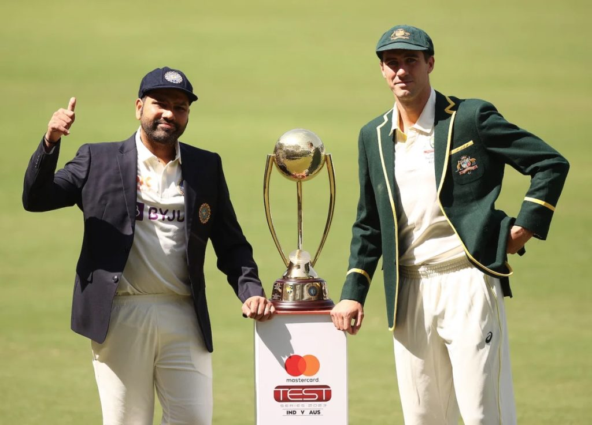

Marnus Labuschagne, the No. 1 Test batter in the world, is relishing the battle he's set to have against R Ashwin in India. He elaborates in detail on how he would approach batting in India, against their various spinners and particularly against Ashwin. In this interview, while detailing his plans, Labuschagne also gives away that it'll hinge on putting the pressure back on Ashwin and getting the run rate up.